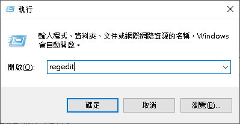
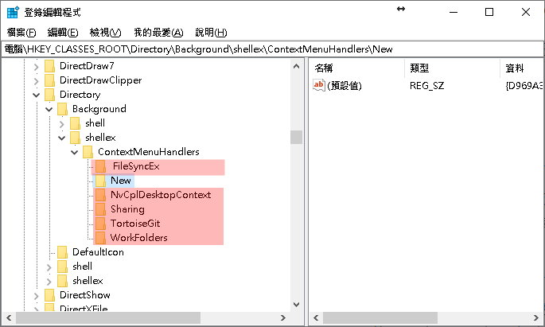

Microsoft Windows 7
Microsoft Windows 8
Microsoft Windows 8.1
Microsoft Windows 10
Microsoft Windows 11
Microsoft Windows Server 2008
Microsoft Windows Server 2008 R2
Microsoft Windows Server 2012
Microsoft Windows Server 2012 R2
Microsoft Windows Server 2016
Microsoft Windows Server 2019
1. 開啟「執行」視窗輸入「regedit」通過此命令開啟<<登錄檔管理器>>。

2. 在<<登錄管理器>>展開以下位置：
HKEY_CLASSES_ROOT\Directory\Background\Shellex\ContextMenuHandle
3. 每臺電腦「ContextMenuHandlers」顯示的列表都不同，可能會出現很多項目。但不管有幾個項目，只需要保留「New」這一項就夠了，其他「全部刪除」。

4. 刪除完畢後，退出註冊表(RegEdit)，然後再次在「桌面空白處」按下滑鼠右鍵，即可打開「右鍵菜單」。